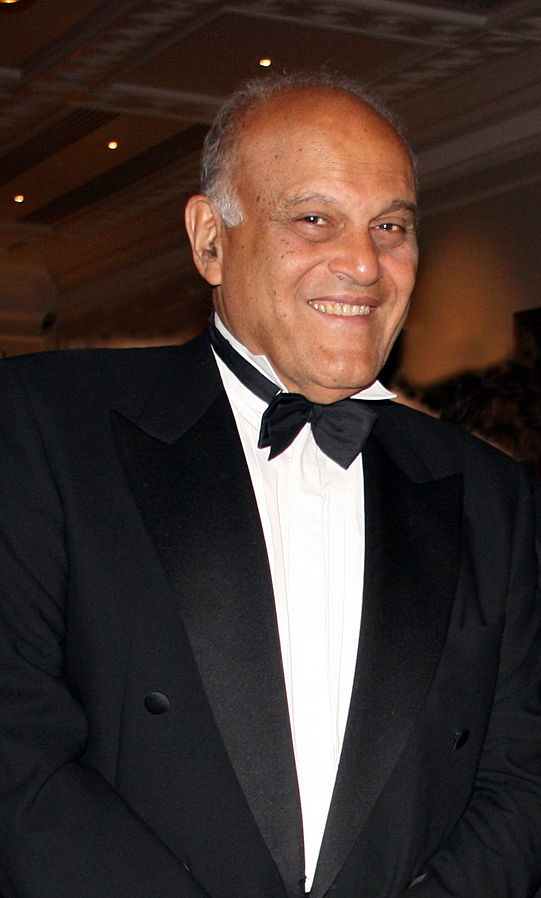

Dr. Magdi Yacoub
Also known as "The king of hearts

Dr.Magdi Yacoub
The timeline of Dr. Magdi Yacoub
- 1935 - Born in Belbes, Egypt.
- 1962 - Worked at the Chest Hospital in London.
- 1966 - Granted the "Knightood" title of "Sir" by Quenn Elizabeth II.
- 1969 - He becomes a Cardiothoracic Surgeon at Harefield Hospital in Harefield.
- 1980 - Performed heart transplant of Europe's longest heart transplant survival patient Derrick Morris.
- 1983 - Performed a combined heart and lung transplant for the first time in the history of the United Kingdom.
- 1986 - Held the position of British Heart Foundation Professor of Cardiothoracic Surgery at the National Heart and Lung Institute.
- 1988 - Awarded Bradshaw Lecture from the Royal College of Physicians.
- 1998 - Awarded the Texas Heart Institute's Ray C. Fish Award for Scientific Achievement in Cardiovascular Disease.
- 2001 - He retired from the National Health Service at the age of 65
- 2004 - Awarded the International Society for Heart and Lung Transplantation Lifetime Achievement Award
- 2006 - Awarded the European Society of Cardiology's gold medal.
- 2014 - Awarded the Order of Merit.
Sir Magid Yacoub once said "Medals do not give anything to science or man, but what gives inner happiness is a new discovery that affects the entire humanity and makes millions happy."
If you have time, you should read more about this incredible human being on his Wikipedia entry.